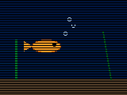

A live camera pointed at a fish tank at Netscape Communications.
|
 Loading frame… |
The FishCam is one of the early “live” images on the Web — not a movie file, just stills that swap every few seconds (or when you reload). Leave this page open. Hit Reload if you prefer the 1994 ritual. Reduced motion keeps a still. Updated every few minutes over the Net · 14.4 kbps friendly stills |
Next: White House
Leftover machine · not the chip · incomplete never writes · itt94-fishcam-lx
Next: White House
2× leftover walk · ★ CSotD leftover · IUMA leftover · Yahoo leftover · CERN leftover · CERN leftover · about · NCSA leftover · NCSA leftover · about · Lycos leftover · Lycos leftover · about · WebCrawler leftover · HotWired leftover · White House leftover · NASA leftover · IUMA leftover · about · CSotD leftover · about · Mosaic leftover · Mosaic leftover · about · CNN leftover · aliweb leftover · apple leftover · bbc leftover · bbs leftover · bbs leftover · about · berkeley leftover · cisco leftover · cmu leftover · compuserve leftover · exploratorium leftover · exploratorium leftover · about · firstvirtual leftover · galaxy leftover · gnn leftover · goodtimes leftover · goodtimes leftover · about · harvest leftover · ibm leftover · imdb leftover · infoseek leftover · intel leftover · jumpstation leftover · loc leftover · Microsoft leftover · mit leftover · netmarket leftover · nyt leftover · pathfinder leftover · pbs leftover · personal leftover · pizzahut leftover · prodigy leftover · smithsonian leftover · stanford leftover · startingpoint leftover · sun leftover · time leftover · uiuc leftover · weather leftover · weblouvre leftover · weblouvre leftover · about · well leftover · wwworm leftover